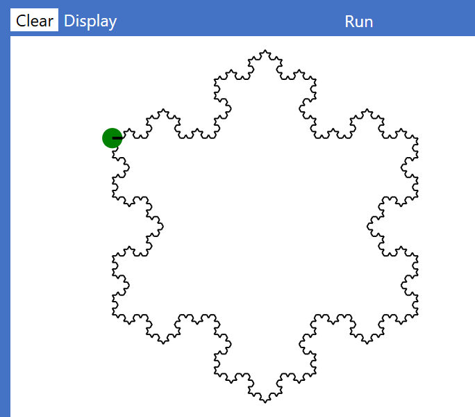

An integer or whole number, i.e. one that has no fractional component.
Type name
Int
Defining a literal integer
variable maxNumberOfAttempts set to 3
Default value
0
Dot methods
function dot method
on Type
argument Types
return Type
description
asBinary
Int
(none)
String
returns a string of binary digits equal in value to integer
asString
Int
(none)
String
returns a string of decimal digits equal in value to integer
Constraints
Maximum value: 253 – 1 which is just over 9 × 1015
Minimum value: – (253 – 1)
Notes
If either limit is exceeded the number will automatically be represented as a Float, with possible loss of precision.
A value assigned to an Int may be expressed in decimal or, if preceded by 0x, in hexadecimal. Hexadecimal is useful for defining colours and Unicode codepoint values.
An Int may always be passed as an argument into a method that specifies a Float.
Float
A ‘floating point number’, i.e. a number that may have both integer and fractional parts.
Type name
Float
Defining literal floating point value
variable a set to 1.618 variable b set to 1.1e-10
Dot methods
function dot method
on Type
argument Types
return Type
description
asString
Float
(none)
String
returns a string representing the floating point value
ceiling
Float
(none)
Int
returns the first integer larger than or equal to the floating point value
floor
Float
(none)
Int
returns the first integer smaller than or equal to the floating point value
round
Float
Int
Float
returns the value rounded to the number of decimal places specified in the argument
Constraints
Since Elan compiles to JavaScript, the constraints on floating point numbers are those of JavaScript:
Maximum value: just over 1 × 10308
Minimum value: approximately 5 × 10-324
For greater detail, refer to the official JavaScript documentation.
A variable that has been defined as being of Type Float may not be passed as an argument into a method that requires an Int, nor as an index into a List, even if the variable contains no fractional part. It may, however, be converted into an Int before passing, using the functions floor or ceiling:
floor returns the integer value left by removing any fractional part, and
ceiling returns the lowest integer greater than the Float value if does have a fractional part.
If you wish to define a variable to be of Type Float but initialise it with an integer value then add .0 on the end of the whole number, for example: variable a set to 3.0
Boolean
A Boolean value is either true or false.
Type name
Boolean
Defining a literal Boolean
variable a set to true
true and false must be written in lower case
Default value
false
Dot methods
function dot method
on Type
argument Types
return Type
description
asString
Boolean
(none)
String
returns "true" if true, "false" if false
String
A String represents ‘text’ i.e. a sequence of zero or more characters (see Character sets).
Type name
String
Defining a literal string value
variable a set to "Hello"
Strings are always delineated by double quotation marks.
Default value
"", known as ‘the empty string’.
Notes
As in most programming languages, strings are immutable. When you apply any operation or function with the intent of modifying an existing string, the existing string is never modified. Instead, the operation or function will return a new string that is based on the original, but with the specified differences.
Strings may be appended to using the plus operator, for example
print"Hello" + " " + "World"
A newline may be inserted within a string as \n, for example:
print "Hello\nWorld"
You may insert single quotation marks 'within a string.
Dot methods
String dot methods are functions which are applied to a variable of Type String. Some take arguments as shown in the table.
function dot method
on Type
argument Types
return Type
description
asString
String
(none)
String
returns the string itself – all Types have this method in order to be printable
asList
String
(none)
List<of String>
returns a list of the individual characters
asUnicode
String
(none)
Int
returns the Unicode value of the first character of the string
asRegExp
String
(none)
RegExp
returns a new string that is a which is converted to a regular expression: no check is made of whether the result is a valid regular expression
asSet
String
(none)
Set
returns a Setof the unique characters in the string
contains
String
(none)
Boolean
returns true if the string contains the substring specified as the argument – false otherwise
indexOf
String
String
Int
returns the offset (from 0) of a single character argument within the string: if the character is not present or if the argument string is other than a single character, it returns -1
isAfter
String
String
Boolean
returns true if an alphabetic comparison finds the string comes strictly 'after' the argument string – false otherwise
isAfterOrSameAs
String
String
Boolean
returns true if an alphabetic comparison finds the string comes 'after' or equals the argument string – false otherwise
isBefore
String
String
Boolean
returns true if an alphabetic comparison finds the string comes strictly 'before' the argument string – false otherwise
isBeforeOrSameAs
String
String
Boolean
returns true if an alphabetic comparison finds the string comes 'before' or equals the argument string – false otherwise
length
String
(none)
Int
returns the number of characters in the string
lowerCase
String
(none)
String
returns a new string with the original rendered in lower case
matchesRegExp
String
RegExp
Boolean
returns true if the string matches the regular expression – false otherwise
replace
String
String, String
String
returns a new string with all occurrences of the first argument string replaced by the second argument string
split
String
String
List<of String>
returns a List of the substrings found between occurrences of the argument string
trim
String
(none)
String
returns a new string with leading and trailing spaces removed
upperCase
String
(none)
String
returns a new string with the original rendered in upper case
Interpolated string
Elan strings are automatically interpolated. This means that you may insert the values of variables or simple expressions within a string by enclosing them in curly braces. For example (assuming that the variables a and b are already defined as integers): print "{a} times {b} equals {a*b}"
You cannot include the characters ", {, or } directly within a literal string because of their special meanings. Instead, you use the constants quotes, openBrace and closeBrace respectively: print "This is a double quotation mark: " + quotes
Alternatively, you can insert their Unicode codepoints by means of the unicode standalone function: print "This is a double quotation mark: " + unicode(34)
or print"Here are the curly braces: {unicode(123)} and {unicode(125)}"
Dot methods on a String
There are no ‘substring’ methods in Elan because you can always use an index range to get a substring, e.g. s[3..7] gives a string containing the fourth character to the seventh character inclusive of string s. Note that the upper bound of the range is exclusive. See Indexed Value.
upperCase returns a new string based on the input with all alphabetic characters in upper case.
lowerCase returns a new string based on the input with all alphabetic characters in lower case.
contains(partString as String) takes a single parameter of Type String and returns a Boolean value indicating whether or not the string argument is contained within the string on which contains was called. For example:
variable a set to "Hello World!"
print a.contains("ello")
prints 'true'.
replace(match as String, replacement as String) returns a new string in which all occurrences of the match string are replaced with the replacement string.
trim returns String returns a new string based on the referenced string with all leading and trailing spaces removed.
indexOf(partString as String) returns Int
The following methods are used for comparing strings alphabetically, for example in a sort routine:
isBefore(otherString as String) returns Boolean isAfter(otherString as String) returns Boolean isBeforeOrSameAs(otherString as String) returns Boolean isAfterOrSameAs(otherString as String) returns Boolean asUnicode returns Int
returns the Unicode (integer) value for a character. If the string is more than one character long, the Unicode value returned is that for the first character in the string only. Note that the opposite method to create a single-character string from its numeric Unicode value is e.g. unicode(123) which returns "{".
Character sets
Program code
Tuples
A tuple is a way of holding a small number of values of different Types together as a single reference. It may be considered a ‘lightweight’ alternative to defining a specific class for some purposes. Tuples are referred to as 2-tuples, 3-tuples, etc. according to the number of values they hold. Common uses include:
Holding a pair of x and y coordinates (each of Type Float) as a single unit.
Allowing a function to pass back a result comprised of both a message in a String and a Boolean indicating whether the operation was successful.
Using a tuple
You may pass a tuple into a function, or return one from a function, for example:
variable d set to distanceBetween(point1, tuple(12.34, 20.0))
An existing tuple (for example point1 below) may be ‘deconstructed’ into new variables or named values (where the number of variables/names must match the number of elements in the tuple):
let x, y set to point1 variable x, y set to point1
or into existing variables of the correct Type:
variable a set to 3 variable b set to 4 set a, b to point1
The ‘discard’ symbol _ (underscore) may also be used when deconstructing a tuple when there is no need to capture specific elements:
variable x, _ set to point1
Notes
As in most languages, Elan tuples are immutable. Once defined they are effectively ‘read only’. You cannot alter any of the elements in a tuple nor (unlike a List for example) can you create a new tuple from an existing one with specified differences.
You cannot deconstruct a tuple into a mixture of new and existing variables.
tuples may be nested: you can define a tuple within a tuple.
Standard data structures
The four 'standard' data structures defined in the Elan library are summarised in this table:
Array
Array2D
List
Dictionary
Size
Static
Static
Dynamic
Dynamic
Type form (example)
Array<of String> of Type Int, Float, String, or Boolean
Array2D<of String> of Type Int, Float, String, or Boolean
List<of String> of any Type including Array – or List for 'jagged' data
Dictionary<of String, Int> key must be Int, Float, String, Boolean, or anyrecord. Value Type may be anything
literal
N/A, but can convert literal list: ["a","b","c"].asArray
N/A
["a","b","c"]
["a":3, "b":5]
create
new Array<of String>(10, "") any initial value of correct Type
new Array2D<of String>(8,8, "") dimensions may differ ('rectangular') any initial value of correct Type
new List<of Int>() created empty can be 'of' any Type
new Dictionary<of String, Int>() Key Type must be simple value or a record Value Type can be any
read by index
a[3]
a2[3, 4]
li[2]
d["b"]
read range
a[2..5] lower bound is inclusive upper bound is exclusive
N/A
li[2..5] lower bound is inclusive upper bound is exclusive
asString keys returns a List values returns a List
All four are 'mutable' – meaning that their contents may be changed directly by calling the various procedure dot methods that each
Type defines.
However, since procedure methods may be called only from within the main routine,
or from within another procedure, it is also possible to make changes via
function dot methods – which return a copy of the current data structure,
with the specified changes – which is why all such methods have names starting with....
All four data structures contain values of a single Type – that Type either being specified explicitly as in
of <procedure> Int – or implictly if the structure
is created from its literal definition form. (Dictionary is defined by two types: one for the 'keys' and one for the 'values').
Array
An array is a simple data structure. The Type for the members of the array must be one of:
Int, Float, String, or Boolean.
The size must also be specified when it is
created, along with the value (of the specific member Type) to which each member is initialised. It is not possible to append
further items to an array, although it is possible to convert an array to a list using .asList and then to extend or reduce that list.
As in most languages, individual elements may be read 'by index'. However, to modify an element you must either
call the put procedure-method, or use
either withPut function-method.
Array2D
The Array2D Type defines a 2-dimensional arrays of a fixed size. The two
dimensions, which are specified when the array is created, may be of the same size (known as a 'square' array)
or different ('rectangular'). If you want to create a 'jagged' array, you should use a List of lists.
The Type for the members is also specified when the array is defined and must be
one of: Int, Float,
String, or Boolean.
You can read individual elements with a double index, for example:
for col from 0 to 7 step 1 for row from 0 to 7 step 1 print board[col, row] end for end for
List
A List is similar to an array but more flexible because:
While the members must all be of one Type, that type is not limited to the simple value types:
the member Type may also be a user-defined type such as a class or record, or another list, or even an array.
The size may be dynamically extended. Indeed a list is either created empty to begin with, or
initialised from a literal definition.
Dictionary
A dictionary works like an array, but instead of requiring a numeric (integer) index, each entry has a 'key'. The Type of
the key – which must be one of Int, Float, String, Booleanor a user-defined record Type – is specified when the dictionary is created along with the type
for the values, which may be any Type.
Immutable data structures
In constrast to the standard data structures, immutable
data structures cannot be modified directly – and hence define no procedure dot methods. Instead,
changes are made by using function dot methods that copy the existing data structure, but with specified
differences. Immutable data structures are intended specifically to facilitate the Functional Programming paradigm,
but some are also useful within other programming paradigms.
The five immutable data structures defined in the Elan library are summarised in this table. More details on each Type are given below the table.
ListImmutable
DictionaryImmutable
Set
Stack
Queue
Type
ListImmutable<of String> Item Type must be immutable
DictionaryImmutable<of String, Int> Key Type must be Int, Float, String, Boolean or any record Value Type may be any immutable Type
Set<of String> Item Type must be immutable
Stack<of String> Item Type must be immutable
Queue<of String> Item Type must be immutable
literal
{a","b","c"}
{"a":3, "b":5}
None, but can convert literal list: ["a","b","c"].asSet()
None
None
create
new ListImmutable<ofString>() created empty must be 'of' an immutable Type
new DictionaryImmutable<of String, Int>() created empty Key and Value Types must be immutable
new Set<of String>() created empty must be 'of' an immutable Type
new Stack<of String>()
new Queue<of String>()
read by Key
lim[2
di["b"]
N/A
N/A
N/A
read range
lim[2..5] upper bound exclusive
N/A
N/A
N/A
N/A
function methods that return new structure of same Type
A Set is a standard data structure that works somewhat like a ListImmutable with the important difference that in a Set a given element may appear only once. If an item being added to a Set is identical to an existing item in the Set then the Set remains the same length as before.
This enables a Set to work like a mathematical set so that it is possible to perform standard set operations such as union or intersection. For the same reason, a Set is an immutable data structure: there are no methods modify the set on which they are called, but several of them (including add, remove) return a new Set that is based on the original Set or Sets, with specified differences.
Example of use:
+mainvariable stname set to newSet<ofInt>()expressionset stvariableName to st.addFromList({3, 5, 7})expressionprint st.length()expressionset stvariableName to st.add(7)expressionprint st.length()expressionset stvariableName to st.remove(3)expressionprint st.length()expressionset stvariableName to st.remove(3)expressionprint st.length()expressionprint stexpressionend main
Notes
When creating a Set, the Type of the elements must be specified in the form
Set<of String>. This applies both when creating a new, empty set and when defining the Type of a parameter to be a Set.
You can add elements: individually with add, or multiple elements with addFromList and addFromList.
You can create a new Set from an existing List or ListImmutable by calling asSet on it.
Stack and Queue are similar data structures except that Stack is ‘LIFO’ (last in, first out), while Queue is FIFO (first in, first out). The names of the methods for adding/removing are different, but there are also common methods, summarised here.
Both a Stack and a Queue are defined with the Type of the items that they can contain, similarly to how List and ListImmutable have a specified item Type, though with different syntax. The Type is specified in the form shown below e.g. Stack<of String>, Queue<of Int>, Stack<of (Float, Float)>, Queue<of Square>.
Both Stack and Queue are dynamically extensible, like List and ListImmutable. There is no need (or means to) specify a size limit as they will continue to expand until, eventually, the computer’s memory limit is reached.
This same syntax is used to specify the Type if you want to pass a Stack into a function, or specify it as the return Type.
Stack and Queue have some methods in common: length, and peek which allows you to read the next item that would be removed, without actually removing it.
The names of the methods for adding or removing an item are different for Stackk and Queue, as summarised in this table:
Stack
Queue
Create a new instance
let s be new Stack<of Int>()
let q be new Queue<of Int>()
Add an item (must be of correct Type)
call s.push(item)
call q.enqueue(item)
Remove the next item
variable item set to s.pop()
variable item set to q.dequeue()
View the next item to be removed without removing it
variable item set to s.peek()
variable item set to q.peek()
Read the current length
s.length()
q.length()
Example use of a Stack:
let skname be newStack<ofString>()expressionprint sk.length()expressioncall sk.pushprocedureName("apple"arguments)call sk.pushprocedureName("pear"arguments)print sk.length()expressionprint sk.peek()expressionvariable fruitname set to sk.pop()expressionprint fruitexpressionset fruitvariableName to sk.pop()expressionprint fruitexpressionprint sk.length()expression
Example use of a Queue:
let quname be newQueue<ofString>()expressionprint qu.length()expressioncall qu.enqueueprocedureName("apple"arguments)call qu.enqueueprocedureName("pear"arguments)print qu.length()expressionprint qu.peek()expressionvariable fruitname set to qu.dequeue()expressionprint fruitexpressionset fruitvariableName to qu.dequeue()expressionprint fruitexpressionprint qu.length()expression
ListImmutable
A ListImmutable is like a List but is immutable (like a String)
You can still insert, delete, or change elements in a ListImmutable, but the methods for these operations do not modify the input ListImmutable: they return a new ListImmutable based on the input ListImmutable but with the specified differences.
Type name
The Type is specified in the following ways:
ListImmutable<of String> for a ListImmutable of Type String
ListImmutable<of Int> for a ListImmutable of Type Int
ListImmutable<of ListImmutable<of Int>> for a ListImmutable of Lists of Type Int
Creating a ListImmutable
A ListImmutable may be defined in ‘literal’ form, delimited by curly braces, and with all the required elements separated by commas. The elements may be literal values but must all be of the same Type, for example:
variable fruit set to {"apple", "orange", "pear"}
Dot methods on a ListImmutable
function method
argument Types
return Types
returns
contains
(single item of the List's Type)
Boolean
true if the List contains the item – false otherwise
asList
(none)
ListImmutable
copy of the List
withInsert
Int, (item)
ListImmutable
copy of the List with (item) inserted at specified position
withPut
Int, (item)
ListImmutable
copy of the List with (item) replacing what was at specified position
withRemoveAt
Int
ListImmutable
copy of the List with the item at specified position removed
withRemoveFirst
(single item of the List's Type)
ListImmutable
copy of the List with the first occurrence of the item removed
withRemoveAll
(single item of the List's Type)
ListImmutable
copy of the List with all occurrences of the item removed
Try these examples:
# reusing variable fruit for each new ListImmutablecommentvariable fruitname set to emptyListImmutable<ofString>expressionprint fruitexpressionset fruitvariableName to fruit.withAppend("apple")expressionset fruitvariableName to fruit.withAppend("pear")expressionprint fruitexpressionprint fruit[1]expressionprint fruit.length()expressionprint fruit[fruit.length() - 2]expressionprint fruit.contains("banana")expression
DictionaryImmutable
An immutable dictionary may be defined in a constant.
Type name
In the following example, the keys are of Type Int, and the values associated with the keys are of Type String:
DictionaryImmutable<of String, Int>
Defining a literal DictionaryImmutable
A literal DictionaryImmutable is defined as a comma-separated list of ‘key:value pairs’ (key,colon.value) surrounded by curly braces:
variable scrabbleValues set to {"a":1, "b":3, "c":3, "d":2}
Using an Immutable Dictionary
Try these examples:
variable immD set to new DictionaryImmutable<of String,Int>() print immD set immD to immD.withPutKey("a", 3) print immD["a"] set immD to immD.withRemoveAtKey("a") print immD
Dot methods on an Immutable Dictionary
See also Quick reference.
hasKey withPutKey withRemoveAtKey
Input/output
Reading Text Files
The TextFileReader class is used to read textual data from a file.
An instance is created by the standalone system method openFileForReading, on
which the dot methods the following methods may be invoked:
readLine
readWholeFile
endOfFile
close
These methods may be used to read a whole file in one go:
let filename be openFileForReading()expressionlet textname be file.readWholeFile()expressioncall file.closeprocedureName(arguments)print textexpression
or to read a file line by line:
+mainlet filename be openFileForReading()expressionvariable linesname set to emptyList<ofString>expression+while notfile.endOfFile()conditionlet linename be file.readLine()expressioncall lines.appendprocedureName(linearguments)end whilecall file.closeprocedureName(arguments)
Notes
openFileForReading will present the user with a dialog to select the file.
readWholeFile returns a String containing every character in the file, without any trimming. It automatically closes the file after the read.
readLine reads as far as the next newline character (\n) and then automatically trims the line to remove any spaces and/or carriage-returns (which some file systems insert after the newline automatically) from the resulting line returned as a String. If this behaviour is not desired, you can use readWholeFile, which does no trimming, and then parse the resulting String into separate lines.
Calling file.close after reading line by line is strongly recommended to avoid any risk of leaving the file locked. It is not necessary to call it after using readWholeFile because that method automatically closes the file.
Calling any method on a file that is already closed will result in a runtime error.
Writing text files
The TextFileWriter class is used to write textual data to a file.
An instance is created by the standalone system method createFileForWriting, on
which the dot methods the following methods may be invoked:
writeLine
writeWholeFile
saveAndClose
These methods may be used to write a whole file in one go:
let fname be createFileForWriting("myFile.txt")expressioncall f.writeWholeFileprocedureName("this is\nmyText"arguments)
or to write a file line by line:
+mainlet filename be createFileForWriting("squares.txt")expression+for ivariableName from 1expression to 100expression step 1expressioncall file.writeLineprocedureName("{i}{i*i}"arguments)end forcall file.saveAndCloseprocedureName(arguments)end main
Notes
writeLine adds the string it is passed onto the end of any data previously written, with a newline character (\n) automatically appended.
When execution reaches saveAndClose you will be presented with a dialog to confirm (or edit) the given filename and location where it is to be saved. It is not therefore strictly necessary to specify a filename when creating the file, since it can be specified by the user in the dialog so, in that case, you might put the empty string "" into the parameter of createFileForWriting.
writeWholeFile puts the string it is given into the file and then automatically saves the file, so the user will be presented with the same dialog as if saveAndClose had been called.
Calling any method on a file that has already been closed (by calling either saveAndClose or by writeWholeFile) will result in a runtime error.
If the user were to hit Cancel on the save dialog, then the program will exit with an error. If you want to guard against this possibility (if, for example, it might mean the loss of important data) then you should perform the save and close within a try..catch like this:
+try call file.saveAndCloseprocedureName(arguments)+catch exception in evariableNameprint "File save cancelled"expressionend try
or you could make the code offer the user options: to save again, or to continue without saving.
Printing Html to the Display
As well as plain text, it is also possible to print Html to the Display, which will be correctly formatted. For example:
For specifying style or other attributes within Html tags, the attribute values should be enclosed in single quotation marks ' as shown above. Html will recognise single or double quotation marks, but entering double quotation marks would terminate the Elan string. Alternatively, you could replace each ' by the interpolated constant quotes.
It is not necessary to put individual lines of Html into separate print statements – you can print a string of any length – but putting tags into separate print statements can improve the readability of your code.
Using an embedded stylesheet
If you want styles to be applied to multiple tags you can embed a stylesheet. For example, the following stylesheet will set the font for all text, and some further details for all <h1> headings:
This demonstrates how to include a stylesheet's necessary curly braces { } since, within a literal string, Elan would interpret these as defining an 'interpolation' clause (see Interpolated string). This is solved by using the interpolated constants openBrace and closeBrace instead of { and }:
Here is the result:
An alternative would be to use, say, [ and ] in the original Html stylesheet instead of { and }, and have a function replace the square brackets with curly braces (defined by their Unicode codepoint values) before use, and get the same result:
Notes
If you define an embedded stylesheet in the manner described above, then this should be printed first, and will then be applied to any subsequent printing of Html within the program. However if the Display is cleared, either by the Clear button in the IDE, or programmatically by calling clearPrintedText, then the stylesheet will be removed also.
You can, though, print the stylesheet again before printing further content. In this case it can be a good idea to define the stylesheet as a (global) constant.
In general you should avoid using * to define the applicability of a style, since this could mess up the styling of the Elan IDE, and even render it unusable. (Should this happen, refresh the browser and correct the stylesheet definition). If you want a style to apply to all elements that you are printing you may specify #display *, which means 'all elements within the element with id = 'display'.
Beware printing strings with < and > in them in case they enclose non-blank characters, since Elan will try and interpret the enclosed characters as an Html tag.
Printing Html to the Display
As well as plain text, it is also possible to print Html to the Display, which will be correctly formatted. For example:
For specifying style or other attributes within Html tags, the attribute values should be enclosed in single quotation marks ' as shown above. Html will recognise single or double quotation marks, but entering double quotation marks would terminate the Elan string. Alternatively, you could replace each ' by the interpolated constant quotes.
It is not necessary to put individual lines of Html into separate print statements – you can print a string of any length – but putting tags into separate print statements can improve the readability of your code.
Using an embedded stylesheet
If you want styles to be applied to multiple tags you can embed a stylesheet. For example, the following stylesheet will set the font for all text, and some further details for all <h1> headings:
This demonstrates how to include a stylesheet's necessary curly braces { } since, within a literal string, Elan would interpret these as defining an 'interpolation' clause (see Interpolated string). This is solved by using the interpolated constants openBrace and closeBrace instead of { and }.
Notes
If you define an embedded stylesheet in the manner described above, then this should be printed first, and will then be applied to any subsequent printing of Html within the program. However if the Display is cleared, either by the Clear button in the IDE, or programmatically by calling clearPrintedText, then the stylesheet will be removed also.
You can, though, print the stylesheet again before printing further content. In this case it can be a good idea to define the stylesheet as a (global) constant.
In general you should avoid using * to define the applicability of a style, since this could mess up the styling of the Elan IDE, and even render it unusable. (Should this happen, refresh the browser and correct the stylesheet definition). If you want a style to apply to all elements that you are printing you may specify #display *, which means 'all elements within the element with id = 'display'.
Handling images
Printing an image on the Display
An image that can be accessed via a URL may be printed on the display using the image keyword followed by the URL. Here, the URL is not bounded by quotes:
print expression
As soon as you leave the field the text will change to show a thumbnail copy of the image:
print expression
If you edit the field again, the keyword and URL will be shown.
When the code is run the image will be printed on the Display, but still thumbnail sized.
You can specify dimensions by using a with clause like this:
print expression
The with clause also permits you to specify a title for the image, which shows up as a tooltip on the image. It is good practice to do this for meeting accessibility guidelines.The with clause
also offers position properties x and y. These are ignored when printing an image, but are useful in the context of drawing Vector Graphics.
An image specified in this way may also be assigned to a named value, or defined inline as an argument to a method, for example:
let sharkname be expression
The Type of a named value that holds an image is ImageVG – the 'VG' indicating that
this type is compatible with vector graphics, so an image may be added to a List<ofVectorGraphic> or displayed
directly by:
In this usage the position may be controlled by specifying the x and y coordinates for the top-left corner.
It is also possible to instantiate an ImageVG explicitly, but in this case you must provide
the URL as a String, either as a literal (by surrounding it with quotes) or as a named value, for example:
let urlname be "https://upload.wikimedia.org/wikipedia/commons/0/08/Corl0207_%2828225976491%29.jpg"expressionlet img1name be newImageVG(url)expressionprint img1expression
Block graphics
Block graphicsprovides a simple way to create low resolution graphics, ideal for simple but engaging games for example.
The graphics are displayed on a grid that is 40 blocks wide by 30 blocks high.
Each block is be rendered as a solid colour.
An example of block graphics to produce a rapidly changing pattern of coloured blocks:
variable blocksname set to newArray2D<ofInt>(40, 30, white)expression+while trueconditionlet xname be randomInt(0, 39)expressionlet yname be randomInt(0, 29)expressionlet colourname be randomInt(0, white - 1)expressioncall blocks.putprocedureName(x, y, colourarguments)call displayBlocksprocedureName(blocksarguments)end while
Notes
The Array2D must be of type Int and of size 40 x 30.
You may create multiple Array2Ds holding different patterns of blocks, and switch between them
just by passing the required one as the argument to the displayBlocks method.
A colour is specified as an Int, as described under Colours.
Turtle graphics
Turtle graphics are implemented in Elan with output to the Display pane on the screen (i.e. the ‘paper’ on which the Turtle draws). The area is 100 turtle units wide by 75 turtle units high.
Example:
let tname be newTurtle()expressioncall t.placeAtprocedureName(10, 10arguments)call t.showprocedureName(arguments)+for ivariableName from 1expression to 4expression step 1expressioncall t.turnprocedureName(90arguments)call t.moveprocedureName(40arguments)call pauseprocedureName(500arguments)end for
Output:
Notes
move and turn are the two most commonly-used methods. To move backwards, specify a negative value. The value passed into turn is interpreted as degrees: a positive value turns clockwise; a negative value anti-clockwise. Both methods take a numeric value, which may be an Int or a Float.
move takes an argument that is a distance in turtle units. If the turtle is moved outside the 100 × 75 area boundary, it will not cause an error, but the location of the turtle and any lines outside the boundary will not be visible.
show causes the turtle to be displayed (the small green circle with a black radius showing the direction it is pointing); hide does the opposite.
You can move and turn the turtle, causing lines to be drawn, whether or not the turtle is shown.
To move the turtle without drawing a line call penUp, then penDown when you are ready to draw lines again.
penColour takes an integer argument specifying the colour. For specifying colours, see Colours.
penWidth takes an integer argument specifying the width of the line drawn by the turtle. The minimum value is 1, which is also the default.
You can specify the start position of the turtle in x,y coordinates (0,0 being the top-left of the Display pane) with placeAt, which may also be used to reposition the turtle (without drawing a connecting line). You may specify the turtle’s absolute heading with turnTo, where 0 would cause the turtle to face up the screen.
The current location and heading of the turtle may be read using the x, y, and heading properties.
There is no difference in effect between call t.pause(500) and the standalone call pause(500): the former option is provided as a convenience, because most instructions in a Turtle program take the form call t.something. Both versions take an integer argument, being the length of the pause in milliseconds.
Apart from the penColour and pause methods, both of which require an integer value, all other procedure methods on the Turtle can take integer or floating point values.
Here is a more sophisticated example, using a procedure and recursion, that produces a fractal snowflake:
+mainvariable tname set to newTurtle()expressioncall t.placeAtprocedureName(20, 20arguments)call t.turnprocedureName(90arguments)call t.showprocedureName(arguments)+for ivariableName from 1expression to 3expression step 1expressioncall drawSideprocedureName(side, targuments)call t.turnprocedureName(120arguments)end forend main+procedure drawSidename(lengthasFloat, tasTurtleparameter definitions)+if (length > 1)condition thenlet thirdname be length/3expressioncall drawSideprocedureName(third, targuments)call t.turnprocedureName(-60arguments)call drawSideprocedureName(third, targuments)call t.turnprocedureName(120arguments)call drawSideprocedureName(third, targuments)call t.turnprocedureName(-60arguments)call drawSideprocedureName(third, targuments)else ifcall t.moveprocedureName(lengtharguments)end ifend procedure+constant sidename set to 60literal value or data structure

Vector graphics
Vector graphics are displayed using SVG (Scalable Vector Graphics) that are a part of the Html specification. The names of the shapes broadly correspond to the names of SVG tags:
CircleVG for <circle../>
LineVG for <line../>
RectangleVG for <rect../>
ImageVG for <image../>
TextVG for <text../>
The properties of the Elan VG shapes match the names of the attributes used in the SVG tags, except that the stroke-width attribute is changed to strokeWidth to make it a valid Identifier.
The ‘canvas’ on which vector graphics are drawn (the Display pane in the user interface) is 100 units wide, by 75 units high. All numeric values specified for attributes of vector graphic shapes may be integer or floating point.
Example:
variable vgname set to newList<ofVectorGraphic>()expressionlet circname be newCircleVG() with centreX set to 20, centreY set to 20, radius set to 5, fillColour set to red, strokeColour set to green, strokeWidth set to 2expressioncall vg.appendprocedureName(circarguments)call displayVectorGraphicsprocedureName(vgarguments)
Output:
This example creates a circle that changes between red and green every second:
variable vgname set to newList<ofVectorGraphic>()expressionlet circname be newCircleVG() with centreX set to 50, centreY set to 37, radius set to 30, fillColour set to greenexpressioncall vg.appendprocedureName(circarguments)+while trueconditioncall displayVectorGraphicsprocedureName(vgarguments)call pauseprocedureName(700arguments)call circ.setFillColourprocedureName(redarguments)call displayVectorGraphicsprocedureName(vgarguments)call pauseprocedureName(700arguments)call circ.setFillColourprocedureName(greenarguments)end while
Notes
The constructor for each VG Type requires arguments corresponding the Html attributes for the corresponding SVG type.
As with Block graphics the screen is not updated until the displayVectorGraphics method is called,
allowing you to make multiple changes before updating the screen. Similarly, the method to add a shape returns a new instance of the VectorGraphics which must be assigned either to an existing variable, or to a new let.
As with the way that SVG works within Html, the shapes are drawn in the order in which they are added into the list of VectorGraphic instances, with later shapes positioned over earlier shapes.
The fillColour and strokeColour properties may be specified as described under Colours.
The fillColour only may also be specified as transparent (which has the value -1).
VectorGraphic is the abstract superclass of all ...VG shapes. You would only use it if you wanted to define a method that could work on any shape (using common members defined on VectorGraphic) or that could work with a List holding different types of shape.
The constructor parameters for CircleVG are: centreX, centreY, radius, fillColour, strokeColour, strokeWidth.
The constructor parameters for LineVG are: x1, y1, x2, y2, strokeColour, strokeWidth, all of Type Int.
The constructor parameters for LineVG are: x, y, width, height, fillColour, strokeColour, strokeWidth.
All parameters for the three constructors above are of type Int.
Individual properties of any of the VG types may be modified by calling the corresponding set... procedure method
or, if working within a function, by using the corresponding with... function method.
displayVectorGraphics takes as an argyment either a List<ofVectorGraphic>()
or a List of any specific type of VectorGraphic such as CircleVG.
Combining graphic outputs
Program outputs, whether text or graphical, can be combined in the Display. In particular, Block graphics and text or Html printing can share the Display
along with either Vector graphics or Turtle graphics (but not both).
If you want to share the Display in this way, remember that both text and Html print outputs appear sequentially down the Display (which can be scrolled), whereas the graphic outputs are positioned in the Display using their own absolute coordinate systems.
The order in which the outputs are displayed (and therefore overwite) is:
Block graphics
Vector or Turtle graphics
Printed text or Html
so some care is needed to manage the layout in the Display.
Other Types
Func
A function may be passed as an argument into another function (or a procedure), or returned as the result of calling another function. This pattern is known as ‘Higher order Function’ (HoF), and is a key idea in the functional programming paradigm. To define a function that takes in another function as a parameter, or returns a function, you need to specify the Type of the function, just as you would specify the Type of every parameter and the return Type for the function.
Type name
The Type of any function starts with the word Func followed by angle brackets defining the Type of each parameter, and the return Type for that function, following this syntax:
Func<of String, String, Int => Boolean>
This example defines the Type for a function that defines three parameters of Type String, String, and Int respectively, and returns a Boolean value. This Type would match that of a function definition that started:
A colour is specified as an Int value using one of these methods:
the limited colours defined as library constants as in the above table.
an integer in the decimal range 0 (black) to 224-1 (white).
a six digit hexadecimal value in the range 0x000000 – 0xffffff
using the same 'RGB' format as used in Html style, for example 0xff0000 for red.
Standalone functions
Standalone library functions always return a value and are therefore used in contexts that expect a value, such as in the right-hand side of a variable declaration (variable) or assignment (set), either on their own or within a more complex expression. All standalone library functions require at least one argument to be passed in brackets, corresponding to the parameters defined for that function.
unicode converts a Unicode value (expressed as an integer value in decimal or hexadecimal notation) into a string of a single character. For example:
+function heartsname(parameter definitions) returns StringTypereturn unicode(0x2665)expressionend function
parseAsInt and parseAsFloat
parseAsInt attempts to parse the input String as an Int and returns a 2-tuple, the first value of which is Boolean, with true indicating whether or not the parse has succeeded, and the second value being the resulting Int.
parseAsFloat does the equivalent for floating point. Operation is illustrated with by these tests:
+test optional descriptionassert parseAsInt("31")computed value is tuple(true, 31)expected valuepassassert parseAsInt("0")computed value is tuple(true, 0)expected valuepassassert parseAsInt("thirty one")computed value is tuple(false, 0)expected valuepassassert parseAsInt("3.1")computed value is tuple(false, 0)expected valuepassassert parseAsFloat("31")computed value is tuple(true, 31)expected valuepassassert parseAsFloat("0")computed value is tuple(true, 0)expected valuepassassert parseAsFloat("3.1")computed value is tuple(true, 3.1)expected valuepassend test
Notes
Any string that parses as an Int will also parse as a Float.
If the parse fails, the second value will become zero, so you should always check the first value to see if the second value is a correct parse or just the default.
You can ‘deconstruct’ the tuple into two variables:
variable success, parsedValuename
One use of these parsing methods is for validating user input, but note that an easier way to do this is to use the various input methods.
floor, ceiling, round, isNaN, and IsInfinite
All of these functions are called as 'dot methods' on a numeric value of type Float or Int).
NaN is short for 'Not A (Real) Number' Their use is illustrated with the following tests:
+test optional descriptionlet nname be 3.14159expressionassert n.floor()computed value is 3expected valuepassassert n.ceiling()computed value is 4expected valuepassassert n.round(3)computed value is 3.142expected valuepassassert sqrt(-1).isNaN()computed value is trueexpected valuepasslet xname be 1/0expressionassert x.isInfinite()computed value is trueexpected valuepassend test
Maths functions and constants
function
argument Type
input unit
returns
output unit
pi
(none)
𝜋 = 3.141592653589793..
abs
Float
absolute value of the input
acos
Float
arccosine of the input
radians
asin
Float
arcsine of the input
radians
atan
Float
arctangent of the input
radians
acosDeg
Float
arccosine of the input
degrees
asinDeg
Float
arcsine of the input
degrees
atanDeg
Float
arctangent of the input
degrees
cos
Float
radians
cosine of the input
cosDeg
Float
degrees
cosine of the input
exp
Float
𝑒𝑥 where 𝑥 is the argument and 𝑒 is Euler's number 2.718281828459045.. the base of natural logarithms
logE
Float
natural logarithm of the input
log10
Float
base-10 logarithm of the input
log2
Float
base-2 logarithm of the input
sin
Float
radians
sine of the input
sinDeg
Float
degrees
sine of the input
sqrt
Float
positive square root of the input
tan
Float
radians
tangent of the input
tanDeg
Float
degrees
tangent of the input
degToRad
Float
degrees
converts input from degrees to radians
radians
radToDeg
Float
radians
converts input from radians to degrees
degrees
Examples of some maths functions being tested:
+test optional descriptionassert picomputed value is 3.141592653589793expected valuepassassert abs(-3.7)computed value is 3.7expected valuepassassert asin(0.5).round(3)computed value is 0.524expected valuepassassert acos(0.5).round(3)computed value is 1.047expected valuepassassert atan(1).round(2)computed value is 0.79expected valuepassassert sin(pi/6).round(2)computed value is 0.5expected valuepassassert cos(pi/4).round(3)computed value is 0.707expected valuepassassert tan(pi/4).round(2)computed value is 1expected valuepassassert exp(2).round(3)computed value is 7.389expected valuepassassert logE(7.389).round(2)computed value is 2expected valuepassassert log10(1000)computed value is 3expected valuepassassert log2(65536)computed value is 16expected valuepassassert log2(0x10000)computed value is 16expected valuepassassert sqrt(2).round(3)computed value is 1.414expected valuepassend test
Regular expressions
Elan’s regular expressions are modelled on those of JavaScript, including the syntax for literal regular expressions. See, for example this Guide to Regular Expressions.
More functions for using regular expressions will be added in a future release of Elan. For now…
The method matchesRegExp is applied to a String using dot syntax and requires a RegExp parameter specified as a literal or as variable. It returns a Boolean. For example:
+test optional descriptionlet s1name be "hello"expressionlet s2name be "World"expressionlet rname be /^[a-z]*$/expressionassert s1.matchesRegExp(r)computed value is trueexpected valuepassassert s2.matchesRegExp(r)computed value is falseexpected valuepassend test
You can convert a valid string without /../ delimiters to a RegExp using function asRegExp:
+test optional descriptionlet s1name be "hello"expressionlet s2name be "World"expressionlet rname be "^[a-z]*$".asRegExp()expressionassert s1.matchesRegExp(r)computed value is trueexpected valuepassassert s2.matchesRegExp(r)computed value is falseexpected valuepassend test
Although it is recommended that literal regular expressions are written with the /../ delimiters, the ability to convert a string allows you to input a regular expression into a running program.
Bitwise functions
These functions take in an integer value, and manipulate the bit representation of that value.
bitAnd
bitOr
bitNot
bitXorPerforms an exclusive OR operation on the bit
bitShiftL – the second argument specifies how many bits to shift-left by
bitShiftR – the second argument specifies how many bits to shift-right by
Examples of the bitwise functions being tested:
+test bitwiseoptional descriptionvariable aname set to 13expressionassert acomputed value is 0xdexpected valuepassassert acomputed value is 0b1101expected valuepassassert a.asBinary()computed value is "1101"expected valuepassvariable bname set to 30expressionassert bcomputed value is 0b11110expected valuepassassert bitAnd(a, b)computed value is 0b1100expected valuepassvariable aobname set to bitOr(a, b)expressionassert aobcomputed value is 0b11111expected valuepassvariable axbname set to bitXor(a, b)expressionassert axbcomputed value is 0b10011expected valuepassvariable notaname set to bitNot(a)expressionassert notacomputed value is -14expected valuepassvariable aLname set to bitShiftL(a, 2)expressionassert aLcomputed value is 0b110100expected valuepassassert bitShiftR(a, 2)computed value is 0b11expected valuepassend test
The result of bitNot(a) being -14 , when a is 13, might be a surprise. But this is because the bitwise functions assume that the arguments are represented as 32-bit signed binary integers. So 13 is represented as 00000000000000000000000000001101, and applying bitAnd gives 11111111111111111111111111110010 which is the value -14 in signed two’s complement format, the left-most bit being the sign (0 positive, 1 negative).
pauses the execution of a program for the given number of milliseconds, e.g. for a game pause(100) delays execution for one tenth of a second
clearPrintedText
(none)
(none)
clears the IDE's Display panel
clearKeyBuffer
(none)
(none)
clears the IDE's keyboard input
printLine
String
(none)
prints the string to the Display followed by a newline
this method offers the means to do all printing via methods
rather than coding a mixture of calls and print statements
printNoLine
String
(none)
prints the string to the Display without appending a newline
a following call will output on the same line
you can put your own "\n" newlines in the argument string
printTab
Int, String
(none)
prints the string to the Display starting at the tab position given (from 0)
Method printTab( helps in the layout of information printed to the Display, in particular, when printing columns of data.
For example:
call printTabprocedureName(0, "Number"position, text)call printTabprocedureName(10, "Square"position, text)call printTabprocedureName(20, "Cube\n"position, text)+for ivariableName from 1expression to 10expression step 1expressioncall printTabprocedureName(0, i.asString()position, text)call printTabprocedureName(10, "{i^2}"position, text)call printTabprocedureName(20, "{i^3}\n"position, text)end for
Right-align numeric output using a lambda function:
variable tabname set to 10expressionvariable iname set to 0expression+for ivariableName from 1expression to (tab - 1)expression step 1expressionvariable jname set to 9^iexpressionvariable fname set to lambdajasInt => j.asString().length()expressioncall printTabprocedureName(tab - f(j), "{j}\n"arguments)end for
System methods
System methods appear to work like functions, because:
they may require one or more arguments to be provided
they always return a value
they are used in expressions
However, system methods are not pure functions because:
They may have a dependency on data that is not provided as an argument
They may generate side-effects, such as changing the screen display, or writing to a file
Because of these properties, system methods may be used only within the main routine or within a procedure. System methods may not be used inside a function that you have defined, because to do so would mean that your function would not be pure.
System methods are all defined within the Elan standard library. You cannot write a system method yourself.
System methods are commonly associated with Input/Output, but note that:
Input/output may also be performed via procedures
Some system methods do not appear to be concerned with input/output: see the list below
The reason those are system methods is that they have a dependency on variable data that is not passed into them as arguments
Table of system methods
function method
argument Types
return Types
description
clock
(none)
Int
returns an integer that increments every millisecond useful for measuring elapsed time by comparing the values returned by two calls
getKey
(none)
String
returns the keyboard key character pressed (see below)
getKeyWithModifier
(none)
2-tuple: String, String
returns both the keyboard key character pressed and the modifier key's name if pressed also (see below)
inputString
String
String
prints the argument string as a prompt and returns the string typed when Enter is pressed
inputStringWithLimits
String, Int, Int
String
prints the argument string as a prompt together with minimum and maximum lengths of response
and returns the string typed when Enter is pressed (see below)
inputStringFromOptions
String, List<of String>
String
inputInt
String
Int
inputIntBetween
String, Int, Int
Int
inputFloat
String
Float
inputFloatBetween
String, Int, Int
Float
openFileForReading
see Reading textual data from a file
random
see Generating random numbers
randomInt
see Generating random numbers
waitForAnyKey
Library functions that process Lists
max and min
Both these functions may be applied to an ListImmutable<of Float> and return the maximum or minimum value found therein.
variable a set to {33, 4, 0,99, 82, 55} print "Max: {a.max()} Min: {a.min()}"
Higher order functions (HoFs)
These dot methods are called on any List,ListImmutable or String. As ‘higher order functions’ they take either a lambda or a function reference as one of their arguments: see Passing a function as a reference.
Important: Several of these methods return a ListImmutable but this may be converted to an array using .asList() at the end of the expression.
These are not yet fully documented but, for readers familiar with HoFs from another programming language, some examples are shown below.
filter
Usage:
let matches be rules.filter(lambda r as Rule =>
(r.currentState is currentState) and (r.currentSymbol is tape[headPosition]))
map
Usage:
let next be cellRange.map(lambda n as Int => nextCellValue(cells, n))
reduce
Usage:
let d2 be possibleAnswers.reduce(d,
lambda dd as Dictionary<of String, Int>, possAnswer as String =>
incrementCount(dd, possAnswer, attempt))
maxBy and minBy
Alternative implementations of max and min:
variable a set to {33, 4, 0,99, 82, 55} print a.maxBy(lambda x as Int => x mod 10)
sortBy
sortBy takes a lambda that takes two arguments (of the same Type as that of the ListImmutable being sorted) and compares them, returning an integer with one of the values -1, 0, or +1, to indicate whether the first argument should be placed respectively before, adjacent to or after the second argument in the sorted result, where ‘adjacent to’ means it does not matter whether before or after):
+main1let sourcename? be [27, 2, 3, 5, 7, 31, 37, 11, 13, 17, 19, 23]expression?2let sortedname? be source.sortBy(lambdaxasInt, yasInt => if x is y then 0 else if x < y then 1 else -1)expression?3print sortedexpression?4end main
Dot methods that work on many different Types
.asString() .length() .head() returns the first item in a List or a ListImmutable